Клиническая психология — наука о психических процессах и их нарушениях, требующая глубокого профессионального образования. Мы составили рейтинг лучших магистерских программ, доступных в дистанционном формате для будущих психологов. В обзоре представлены ведущие университеты РФ и их онлайн-магистратуры, позволяющие получить качественное психологическое образование и диплом магистра без отрыва от работы. Каждая программа обучения оценивалась по качеству клинической подготовки и возможностям дальнейшего консультирования пациентов.
✅ Лучшие дистанционные ВУЗы магистратуры по клинической психологии с выдачей диплома магистра
| Место | Программа обучения | Сайт курса |
|---|---|---|
| 1 🥇 | Клинико-психологическое консультирование Московский институт психоанализа 🎁 Скидка 15% по промокоду "onlinekursreit_15" |
Перейти |
| 2 🥈 | Клиническая психология Московский институт психоанализа |
Перейти |
| 3 🥉 | Магистратура по психологии Московский международный университет |
Перейти |
| 4 | Магистратура
в области клинической психологии развития МГППУ |
Перейти |
✅ Лучшие ВУЗы и онлайн-институты с магистерскими программами по психологии с выдачей диплома бакалавра
| Место | Программа обучения | Сайт курса |
|---|---|---|
| 1 🥇 | Магистратура по психологии Онлайн-институт Smart |
Перейти |
| 2 🥈 | Магистратура: Коучинг и психологическое
консультирование Московский институт технологий и управления 🎁 Скидка 15% от окончательной стоимости по промокоду "onlinekursreit" |
Перейти |
| 3 🥉 | Консультативная психология Высшая школа «Среда обучения» и Московский институт психоанализа 🎁 Скидка 15% по промокоду "onlinekursreit_15" |
Перейти |
✅ Лучшие онлайн-курсы и программы переподготовки по клинической психологии с выдачей диплома профессиональной переподготовки
| Место | Программа обучения | Сайт курса |
|---|---|---|
| 1 🥇 | Психология бакалавриат Московский Институт Психологии 🎁 Скидка 10% по промокоду "advcake" |
Перейти |
| 2 🥈 | Клиническая психология Московский институт психологии 🎁 Скидка 10% по промокоду "advcake" |
Перейти |
| 3 🥉 | Курс клинической психологии в институте прикладной психологии Институт прикладной психологии 🎁 Скидка 5% по промокоду "Welcome5" |
Перейти |
| 4 | Онлайн-курс по психологическому консультированию и психодиагностике Talentsy 🎁 Скидка 5% по промокоду "mystudy5" |
Перейти |
| 5 | Обучение клинической психологии Онлайн Институт Смарт |
Перейти |
| 6 | Клиническая психология Психодемия |
Перейти |
| 7 | Клиническая и кризисная психология Национальная академия дополнительного профессионального образования (НАДПО) 🎁 Скидка 5% по промокоду "mystudy" |
Перейти |
🏆 Клинико-психологическое консультирование – Московский институт психоанализа
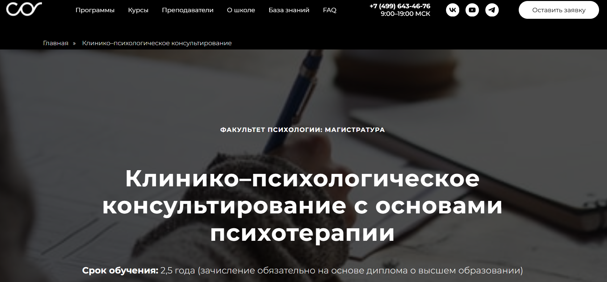⭐ Рейтинг: 5.0
- Сайт: psychology.sredaobuchenia.ru/cpcons
- Полная стоимость: 110 000 рублей за семестр. Возможность получить налоговый вычет. 🎁 Скидка 15% по промокоду "onlinekursreit_15".
- Рассрочка: Возможность рассрочки на 4 месяца от 27 500 рублей/мес.
- Длительность: 2,5 года.
- Документ: Диплом государственного образца.
- Трудоустройство: Поддержка в трудоустройстве и развитии частной практики.
Особенности курса:
Программа предусматривает обучение методам клинической диагностики и терапии, подготовку к работе с детьми и взрослыми с отклонениями в развитии. Дистанционный формат с гибким графиком позволяет совмещать обучение с работой.
Преподаватели курса:
- Профессора МГУ им. Ломоносова
- Преподаватели Московского института психоанализа
- Психотерапевты с большим практическим опытом
Кратко о программе курса:
- Основы нейропсихологии
- Методы клинико-психологической диагностики
- Психология подростков
- Консультирование семей с детьми
- Психотерапия и психосоматика
Чему научитесь:
Вы освоите методы клинической диагностики, научитесь работать с психическими расстройствами и консультировать семьи.
Преимущества и особенности:
- Гибкий график обучения
- Дистанционный формат с доступом к видео-записям
- Онлайн-библиотека
- Карьерная поддержка
- Опытные преподаватели
Читайте отзывы учеников:
Отзывы студентов положительные: хвалят качество материалов, профессионализм преподавателей, возможность совмещать с работой. Многие начали карьеру в психологии после курса.
🏆 Клиническая психология – Московский институт психоанализа
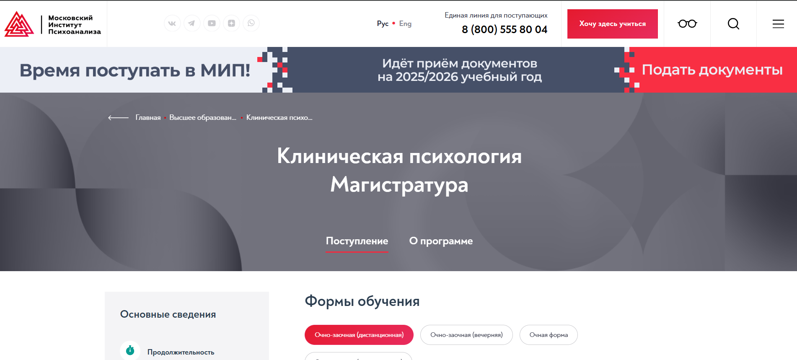⭐ Рейтинг: 5.0
- Сайт: inpsycho.ru/higher_education/klinicheskaya-psihologiya-magistratura
- Полная стоимость: 125 000 рублей за семестр. Возможность вернуть 13% налогового вычета.
- Рассрочка: Нет информации.
- Длительность: 2,5 года.
- Документ: Диплом магистра клинической психологии.
- Трудоустройство: Помощь через партнёрскую сеть организаций.
Особенности курса:
Глубокое изучение нейро- и патопсихологии, клинико-психологического консультирования, психотерапии, психосоматики и психологии телесности для работы с соматоформными расстройствами.
Кратко о программе курса:
- Культурно-историческая нейро- и патопсихология
- Клинико-психологическое консультирование
- Психосоматика и психология телесности
- Психотерапия постстрессовых расстройств
- Дистанционные образовательные технологии
Чему научитесь:
Диагностика и консультирование, работа с психосоматическими расстройствами, психотерапия постстрессовых состояний, подготовка к работе в медцентрах и психологических службах.
Преимущества и особенности:
- Дистанционные технологии
- Стабильная структура программы
- Возможность научных публикаций
- Широкий выбор специализаций
Читайте отзывы учеников:
Отмечают гибкий график, практическую направленность, высокий уровень организации и возможность налогового вычета.
🏆 Магистратура по психологии – Московский международный университет
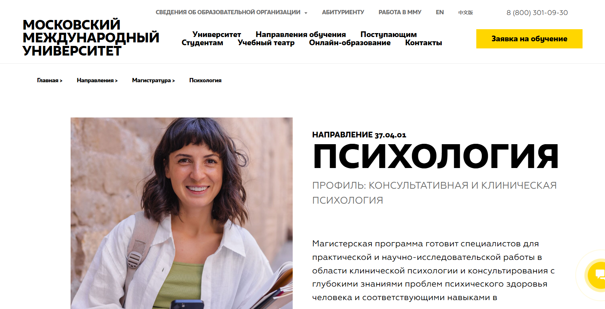⭐ Рейтинг: 5.0
- Сайт: mi.university/magistratura-psychologia
- Полная стоимость: от 52 000 до 71 500 рублей за весь курс (возможны скидки и льготы).
- Рассрочка: Предусмотрена, условия индивидуально.
- Длительность: 2,5 года.
- Документ: Диплом магистра государственного образца.
- Трудоустройство: Консультации, карьерная поддержка, участие в конференциях.
Особенности курса:
Обучение через бинарные лекции, круглые столы, дискуссии, мастер-классы и встречи с практиками. Участие в мозговых штурмах и научных исследованиях.
Кратко о программе курса:
- Консультативная и клиническая психология
- Методы диагностики и консультирования
- Психологическая реабилитация
- Профилактика и охрана психического здоровья
- Гармонизация психического развития
Чему научитесь:
Консультативная и клиническая работа, диагностика и коррекция отклонений в развитии личности.
Преимущества и особенности:
- Гибкие форматы (очно-заочно, дистанционно)
- Практическая направленность
- Научные конференции
- Методологические игры и кейсы
Читайте отзывы учеников:
Студенты отмечают удобный график, актуальность знаний, высокую квалификацию преподавателей и хорошую карьерную отдачу программы.
🏆 Магистратура в области клинической психологии развития – МГППУ
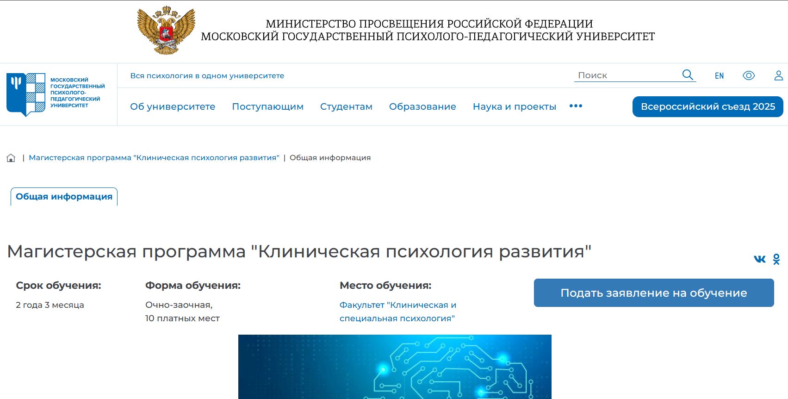⭐ Рейтинг: 4.9
- Сайт: mgppu.ru/project/485
- Полная стоимость: Уточняется, возможность налогового вычета.
- Рассрочка: Уточняется при поступлении.
- Длительность: 2 года 3 месяца.
- Документ: Диплом магистра по направлению "Психология" государственного образца.
- Трудоустройство: Высокий уровень трудоустройства выпускников.
Особенности курса:
Модульное обучение с теорией, практикой и научными исследованиями. Упор на изучение закономерностей клинико-психологического, биологического и социального развития человека.
Кратко о программе курса:
- Законы клинико-психологического развития
- Работа с антропометрическими параметрами
- Разработка психодиагностических программ
- Составление заключений и рекомендаций
Чему научитесь:
Создавать и реализовывать реабилитационные программы для людей с ограничениями по здоровью.
Преимущества и особенности:
- Гибкая очно-заочная форма
- Большой объём практики
- Профессиональный учебный план
- Гос. диплом
Читайте отзывы учеников:
Отмечают высокий уровень преподавания, возможность совмещения с работой, хорошую организацию практики и значимость полученных знаний для карьеры.
✅ ТОП ВУЗов и онлайн-институтов с магистерскими программами по психологии
🏆 Магистратура по психологии – Онлайн-институт Smart
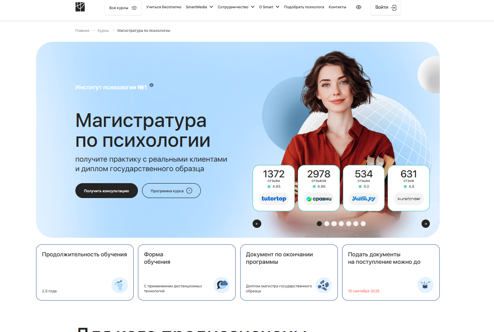⭐ Рейтинг: 5.0
- Сайт: smart-inc.ru/masters-degree/
- Полная стоимость: от 94 800 ₽.
- Рассрочка: Информация по рассрочке отсутствует.
- Длительность: 2,5 года.
- Документ: Диплом магистра государственного образца.
- Трудоустройство: Поддержка карьерного роста, первые клиенты через SmartHelp и SmartMental.
Особенности курса:
Практическая работа с клиентами уже через 12 месяцев обучения, круглосуточная поддержка кураторов 24/7, возможность вступления в профессиональные сообщества и работа с Центром карьеры института.
Преподаватели курса:
- Оксана Денисова — доктор педагогических наук, кандидат психологических наук.
- Светлана Варнавская — коуч, бизнес-коуч, ментор, член Ассоциации КПТ.
- Таисия Потевская — практикующий психолог, коуч, более 1,000 часов практики.
- Наталья Бартон — аккредитованный супервизор ОППЛ, психолог, коуч.
Кратко о программе курса:
- Консультирование в когнитивно-поведенческом и интегративном подходах
- Практическая работа с клиентами и современные методики
- Специализации в социальной и клинической психологии
Чему научитесь:
Освоите техники консультации, работу с семейными и профессиональными запросами, диагностику и терапию кризисных состояний.
Преимущества и особенности:
- Гибкое обучение — удобно совмещать с работой
- Поддержка опытных преподавателей
- Участие в профессиональных сообществах
- Доступ к Центру карьеры и обмен опытом с выпускниками
Читайте отзывы учеников:
Студенты отмечают профессионализм преподавателей и возможность сразу применять знания на практике, удобство дистанционного формата и поддержку на каждом этапе.
🏆 Магистратура: Коучинг и психологическое консультирование — Московский институт технологий и управления
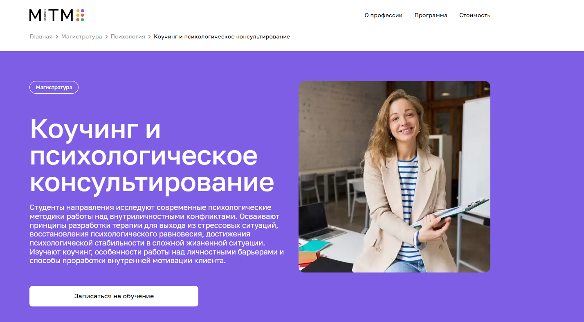⭐ Рейтинг: 5.0
- Сайт: mitm.institute/kouching-i-psihologicheskoe-konsultirovanie--magistratura
- Полная стоимость: 78 600 ₽ (со скидкой — 55 000 ₽). Возможен налоговый вычет 13%. 🎁 Скидка 15% по промокоду "onlinekursreit".
- Рассрочка: 0% на 12 месяцев, от 9 170 ₽/мес.
- Длительность: 2 года 6 месяцев.
- Документ: Диплом магистра государственного образца.
- Трудоустройство: Программа трудоустройства после окончания включена.
Особенности курса:
Изучение современных методик работы с внутриличностными конфликтами, освоение стратегий психологического исследования, полностью дистанционный формат с доступом к лекциям, практикам и экзаменам из любой точки мира.
Кратко о программе курса:
- Стратегии психологического исследования
- Качественные и количественные методы анализа данных
- Проективные методы в психологии
- Межкультурное взаимодействие
- Психология самооценки
Чему научитесь:
Освоите современные HR-технологии и психотерапевтические методы для эффективного консультирования и коучинга.
Преимущества и особенности:
- Полностью дистанционный формат
- Поддержка кураторов 24/7
- Перевод из других вузов без потери курса
- Адаптация программы под требования работодателей
- Беспроцентная рассрочка оплаты
Читайте отзывы учеников:
Слушатели отмечают практическую направленность и поддержку на всех этапах; часто подчеркивают доступность материалов и профессионализм преподавателей.
Другие программы магистратуры МИТМ:
🏆 Консультативная психология – Высшая школа «Среда обучения» и Московский институт психоанализа
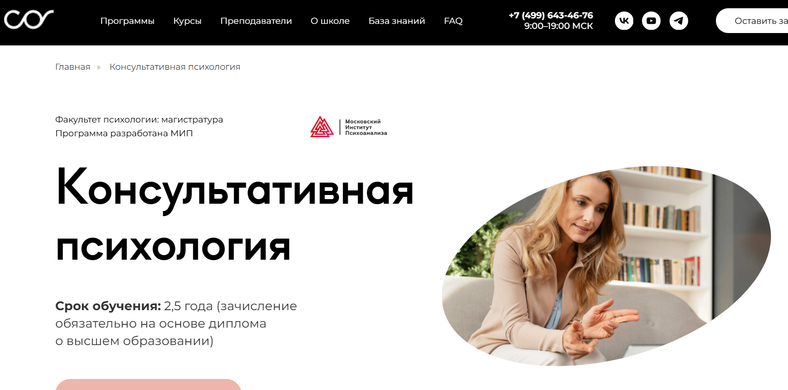⭐ Рейтинг: 5.0
- Сайт: psychology.sredaobuchenia.ru/mob/advisorypsy
- Полная стоимость: 220 000 ₽ (за два семестра). Возможен налоговый вычет. 🎁 Скидка 15% по промокоду "onlinekursreit_15".
- Рассрочка: 0% на 6 месяцев, от 18 333 ₽/мес.
- Длительность: 2,5 года.
- Документ: Диплом магистра государственного образца по программе «Консультативная психология».
- Трудоустройство: Официальной программы нет; поддержка преподавателей и участие в сетевых мероприятиях для установления профессиональных контактов.
Особенности курса:
Практико-ориентированная подготовка консультантов: направления включают арт-терапию, психосоматику, сексологию и когнитивно-бихевиоральные техники для решения сложных случаев.
Преподаватели курса:
- Дмитрий Малин — психолог-консультант с многолетним опытом.
- Анастасия Карачевцева — психотерапевт, специализация в семейной терапии.
Кратко о программе курса:
- Методы психологической диагностики и тестирования
- Теория и практика психологического консультирования
- Гештальт-подход и арт-терапия
- Социально-психологический тренинг в семейном консультировании
- Основы психосоматики и сексологии
Чему научитесь:
Овладеете индивидуальным и семейным консультированием, научитесь работать со сложными жизненными ситуациями и применять разнообразные подходы.
Преимущества и особенности:
- Дистанционный формат с доступом к записям занятий
- Гибкое расписание и интеграция обучения в повседневную жизнь
- Поддержка кураторов и преподавателей на всех этапах
- Практические кейсы и тренинги
- Широкий выбор элективов и факультативов
Читайте отзывы учеников:
Обучающиеся отмечают качественное преподавание, поддержку кураторов, удобный дистанционный формат и практическую направленность обучения, способствующую карьерному росту.
Другие программы магистратуры от «Среды обучения»:
✅ Лучшие курсы по обучению на клинического психолога с получением диплома государственного образца ✅
Профессиональная переподготовка на клинического психолога открывает широкие карьерные перспективы для специалистов, стремящихся к работе в сфере психического здоровья. После завершения обучения выпускники получают диплом о профессиональной переподготовке государственного образца, который дает право на ведение профессиональной деятельности в области клинической психологии. Это позволяет трудоустраиваться в медицинские учреждения, психологические центры, реабилитационные клиники и образовательные организации. Кроме того, полученные знания и навыки создают прочную основу для развития частной практики, где специалист может самостоятельно консультировать клиентов, проводить психодиагностику и коррекционную работу.
🏆 Психология (бакалавриат) – Московский Институт Психологии
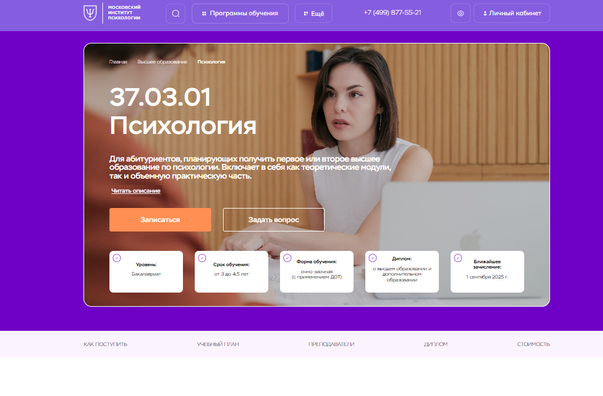⭐ Рейтинг: 5.0
- Сайт: mip.institute/bachelor/psikhologiya
- Полная стоимость: 45 000 ₽ за семестр или 80 000 ₽ за год. Налоговый вычет 13%. 🎁 Скидка 10% по промокоду "advcake".
- Рассрочка: Доступна при оплате обучения от 1 года.
- Длительность: 3–4,5 года.
- Документ: Диплом о высшем и дополнительном образовании.
- Трудоустройство: Помощь в карьере, возможность частной практики.
Особенности курса:
Сочетание теории и практики, изучение базовых психологических дисциплин, исследования внутриличностных и межличностных проблем, дополнительные специализации.
Преподаватели курса:
- Перемолотова Ирина Александровна — семейный психолог, член ассоциации КПП и арт-терапевтов.
- Цяпало Анна Владимировна — член Ассоциации психоаналитического коучинга.
- Дубровская Анастасия — гештальт-терапевт.
- Прибылова Валерия Борисовна — детский психолог, стипендиат Правительства Москвы.
Кратко о программе курса:
- Общая психология и методы научного исследования
- Введение в профессию и анатомия человека
- Семейная, корпоративная и антикризисная психология
Чему научитесь:
Навыки диагностики и консультирования, применение психологических методов для решения внутриличностных и социальных задач.
Преимущества и особенности:
- Дистанционное обучение с очными элементами
- Гибкий график
- Поддержка кураторов
- Широкие возможности для карьерного роста
Отзывы:
Выпускники отмечают высокую квалификацию преподавателей, удобный формат и карьерные перспективы.
Другие программы бакалавриата МИП:
🏆 Клиническая психология – Московский институт психологии (МИП)
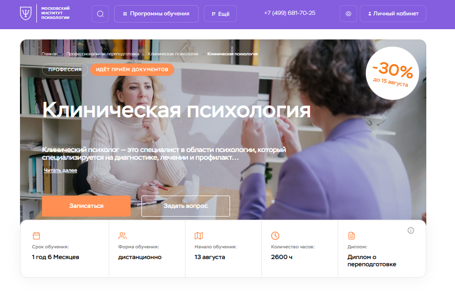⭐ Рейтинг: 5.0
- Сайт: mip.institute
- Полная стоимость: 228 000 ₽ (со скидкой — 159 489 ₽). Налоговый вычет 13%. 🎁 Скидка 10% по промокоду "advcake".
- Рассрочка: 0% на 12 месяцев, от 13 300 ₽/мес.
- Длительность: 18 месяцев.
- Документ: Диплом о профессиональной переподготовке (гос. лицензия).
- Трудоустройство: Членство в ОППЛ для развития карьеры и профсети.
Особенности курса:
Полностью дистанционная организация обучения с онлайн-тестированием, практическими заданиями, доступом к профессиональному сообществу и регулярным вебинарам.
Преподаватели курса:
- Наталья Бербер — психолог и преподаватель с 25-летним опытом.
- Ирина Перемолотова — семейный психолог, терапевт и коуч (7 лет опыта).
- Татьяна Урывчикова — клинический психолог и нейропсихолог.
Кратко о программе курса:
- Клиническая психология
- Нейропсихология
- Психотерапия
- Патопсихология
- Психиатрия и психосоматика
- Практикумы по диагностике и экспертной оценке
Чему научитесь:
Диагностика, терапия и психокоррекция психических расстройств; консультирование и реабилитация клиентов.
Преимущества и особенности:
- Дистанционный формат
- Гибкая система тестов и практик
- Доступ к сообществу и ОППЛ
- Кураторская поддержка и обратная связь
- Широкий спектр дисциплин и кейсы
Отзывы:
Отмечают качество материалов, профессионализм преподавателей и удобство гибкого дистанционного формата.
Другие курсы профпереподготовки МИП:
🏆 Курс клинической психологии – Институт прикладной психологии (IPPSS)
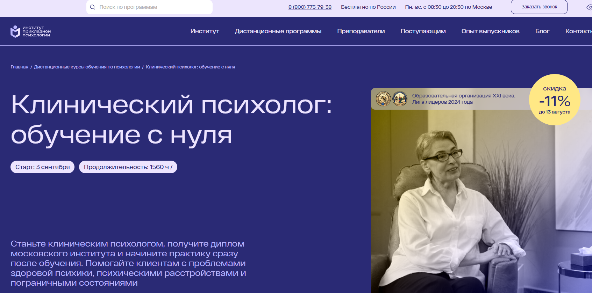⭐ Рейтинг: 5.0
- Сайт: ippss.ru/program/klinicheskaya-psikhologiya-s-nulya
- Полная стоимость: 130 600 ₽ (скидка 11%), налоговый вычет доступен. 🎁 Скидка 5% по промокоду "Welcome5".
- Рассрочка: 0% на 12 месяцев, первый платёж 10 883 ₽.
- Длительность: 15,5 месяцев (1,560 часов).
- Документ: Диплом о профессиональной переподготовке.
- Трудоустройство: Поддержка через Центр развития карьеры.
Особенности курса:
Сильная теоретическая и практическая база, онлайн-вебинары, супервизии и практика на реальных кейсах.
Преподаватели курса:
- Елена Дорофеева — детский психолог, 27 лет стажа.
- Светлана Соловьёва — клинический психолог, 20 лет опыта.
- Ольга Морозова — коуч и бизнес-тренер, 8 лет опыта.
- Светлана Леонова — психолог, 10 лет стажа.
Кратко о программе курса:
- 1–5 мес.: основы психологии
- 6–9 мес.: практическая работа с клиентами
- 10–13 мес.: техники консультирования
- 14–15,5 мес.: практикум, кейсы и супервизии
Чему научитесь:
Организация профессиональной деятельности и консультирование клиентов с различными клиническими запросами.
Преимущества и особенности:
- Гибкий дистанционный формат
- Доступ к 1,000 вебинаров во время курса и 3 месяца после
- Международный диплом
- Поддержка Центра карьеры
- Реальные кейсы и супервизии
- Бессрочный доступ к материалам после завершения
Отзывы:
Слушатели отмечают практическую пользу, удобство дистанционного формата и возможность «прокачать» навыки под руководством преподавателей.
Другие курсы IPPSS:
🏆 Онлайн-курс по консультированию и психодиагностике – Talentsy
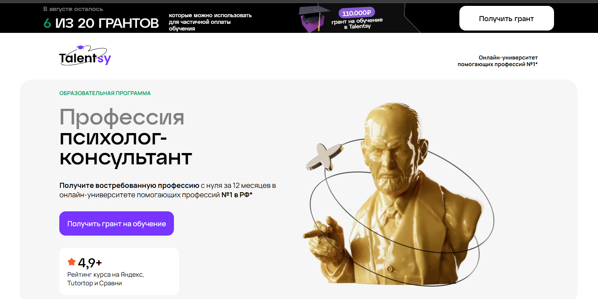⭐ Рейтинг: 4.9
- Сайт: talentsy.ru/professiya-psikholog
- Полная стоимость: 110 000 ₽; налоговый вычет 13%; грант от 93 125 ₽. 🎁 Скидка 5% по промокоду "mystudy5".
- Рассрочка: 0% на 12 месяцев, от 9 375 ₽/мес.
- Длительность: 12 месяцев.
- Документ: Диплом о профпереподготовке, международный диплом MBA, сертификаты IPHM и CPD.
- Трудоустройство: Помощь в запуске частной практики и продвижении услуг.
Особенности курса:
Интеграция теории и практики с первого дня; соответствует ФГОС ВО 370301 «Психология»; дистанционный формат с доступом к материалам и супервизиям.
Преподаватели курса:
- Елена Новосёлова — психотерапевт, 30+ лет практики, автор книг и радиоэфиров.
- Инна Васильева — доктор психол. наук, профессор, 170+ статей.
- Ксения Кунникова — канд. наук, специалист по раннему развитию.
- Ольга Виндекер — канд. наук, руководитель отделения РПО.
- Сергей Киселёв — канд. наук, эксперт детской нейропсихологии.
Кратко о программе курса:
- Профессия психолога-консультанта
- Мозг и поведение
- Основы консультирования
- Психология личности и диагностика
- Возрастная психология
- Психология семьи и сексуальности
- Клиническая психология и кризисная помощь
- Современные модальности
- Личный бренд психолога
Чему научитесь:
Профессиональному консультированию, аналитическим методам, выработке индивидуального стиля и работе с реальными клиентами.
Преимущества и особенности:
- Менторская поддержка и супервизии
- Интерактивное обучение и практика
- Международные документы
- Старт частной практики и карьерная поддержка
- Широкий доступ к материалам и видеоурокам
Отзывы:
Отмечают высокий профессионализм преподавателей, структурность и полезность курса для начинающих специалистов.
Другие курсы Talentsy:
🏆 Обучение клинической психологии – Онлайн Институт Smart
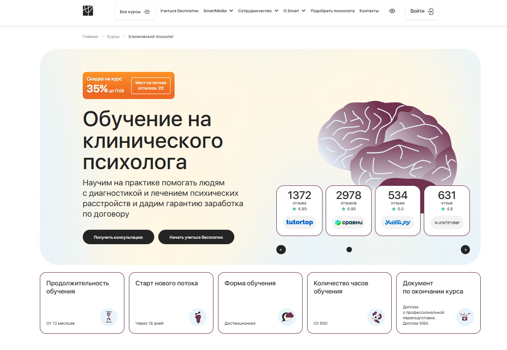⭐ Рейтинг: 4.9
- Сайт: smart-inc.ru/clinic-psycholog
- Полная стоимость: 254 900 ₽; налоговый вычет; грант 40 000 ₽.
- Рассрочка: от 8 954 ₽/мес до 24 месяцев.
- Длительность: от 13 месяцев.
- Документ: Диплом о профпереподготовке и международный MBA.
- Трудоустройство: Центр карьеры, клиенты для практики и поддержка в трудоустройстве.
Особенности курса:
Практико-ориентированная программа на интерактивной платформе: разбор реальных кейсов, супервизии с экспертами и гибкий график.
Преподаватели курса:
- Кристина Юст — клинический психолог, детский нейропсихолог, 6+ лет опыта.
- Альбина Собина — специалист по психической регуляции и эмоциональному интеллекту.
- Илья Плужников — клинический психолог, канд. психол. наук, 15 лет стажа.
Кратко о программе курса:
- Основы клинической психологии
- Психофизиология и нейропсихология
- Психодиагностика и патопсихология
- Психотерапия
- Психосоматика и дифференциальная психология
- Консультирование и коррекция
- Сферы деятельности клинического психолога
Чему научитесь:
Раннее распознавание расстройств, комплексная диагностика и работа с различными клиентскими запросами.
Преимущества и особенности:
- Интерактивная дистанционная платформа
- Два диплома, включая международный MBA
- Реальные кейсы и супервизии
- Поддержка в трудоустройстве и старте практики
- Кураторы и наставники 24/7
- Членство в профассоциациях
Отзывы:
Слушатели выделяют практическую направленность, качество обучения и ощутимую карьерную поддержку.
Другие курсы Института SMART:
🏆 Клиническая психология – Психодемия
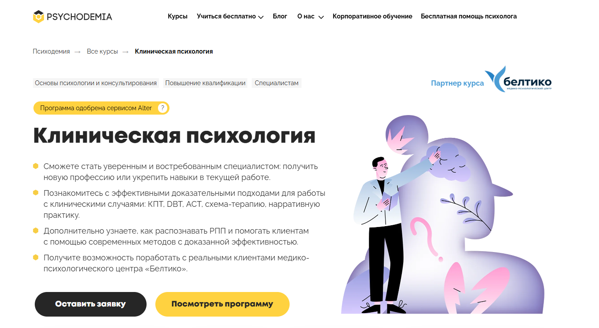⭐ Рейтинг: 4.8
- Сайт: psychodemia.ru/clinicalpsychology
- Полная стоимость: от 367 974 ₽; возможен налоговый вычет; гранты обсуждаются.
- Рассрочка: 0% на 24 месяца, от 15 332 ₽/мес.
- Длительность: 2 года.
- Документ: Диплом о профпереподготовке (1,061/1,130 ак. часов).
- Трудоустройство: Практическая база и мероприятия для обмена опытом.
Особенности курса:
Фокус на доказательных методах (КПТ, схема-терапия, ДПТ) и практику с реальными клиентами в медико-психологическом центре.
Преподаватели курса:
- Дмитрий Ершов — клинический психолог, стаж МЧС 12 лет, «Лучший психолог-2019».
- Галина Лайшева — канд. психол. наук, 9+ лет в психиатре.
- Анастасия Афанасьева — врач-психиатр и психотерапевт, клинический директор MHC.
Кратко о программе курса:
- Биологические основы поведения
- Психиатрия и патопсихология
- Психофармакология
- Диагностика и клиническое интервью
- Нормальное и нарушенное развитие
- Клинические интервенции и профилактика
- Расстройства личности и настроения
- ТР, ОКР, аддиктивное и суицидальное поведение
- Хронические заболевания и психосоматика
Чему научитесь:
Работе с психическими расстройствами с применением доказательных подходов и проведению психологической интервенции.
Преимущества и особенности:
- Современные доказательные методы
- Практика с реальными клиентами
- Наставники и супервизии
- Налоговый вычет
- Выпускной экзамен и сообщество выпускников
Отзывы:
Слушатели отмечают практическую ориентированность, поддержку наставников и удобную платформу.
Другие курсы Психодемии:
🏆 Клиническая и кризисная психология – НАДПО
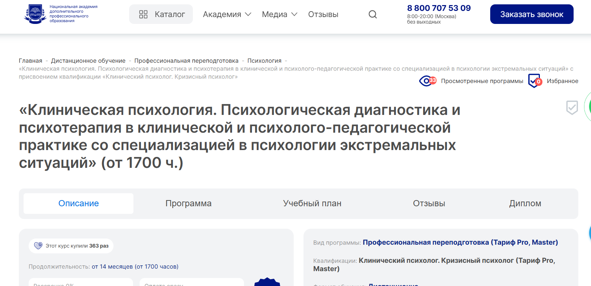⭐ Рейтинг: 4.7
- Сайт: nadpo.ru/do/klinicheskaya-psikhologiya
- Полная стоимость: 263 800 ₽ (со скидкой — 92 300 ₽). Налоговый вычет. 🎁 Скидка 5% по промокоду "mystudy".
- Рассрочка: 0% до 36 месяцев, от 7 692 ₽/мес.
- Длительность: от 14 месяцев (от 1,700 часов).
- Документ: Диплом о профпереподготовке (гос. лицензия).
- Трудоустройство: Поддержка карьеры и старта частной практики.
Особенности курса:
Глубокая проработка клинической и кризисной психологии, очные и онлайн-практики, быстрый вход в профессию.
Преподаватели курса:
- Дарья С. Волкова — в психологии с 2012.
- Татьяна В. Козленко — с 2005.
- Елена В. Дарменко — с 2002.
- Галина Б. Нарожная — с 2011.
- Виталия И. Плавинская — с 2016.
- Елена А. Прохорова — с 2018.
Кратко о программе курса:
- Правовые основы и законодательство
- Общая, возрастная и семейная психология
- Клиническая психология, нейропсихология, психосоматика
- Диагностика и консультирование кризисных состояний
- Практикум по пато-/нейропсихологии и экстренная помощь
Чему научитесь:
Диагностировать и консультировать в кризисах, оказывать поддержку при личных и профессиональных кризисах.
Преимущества и особенности:
- Дистанционно, доступ 24/7
- Поддержка кураторов-практиков
- Бессрочный доступ к СДО и библиотеке вебинаров
- Онлайн-семинары и воркшопы
- Бесплатный доступ к ЛитРес и Библиоклуб
- Учёт документов в ФИС ФРДО
Отзывы:
Слушатели оценивают насыщенность программы, поддержку преподавателей и практическую пользу для карьеры.